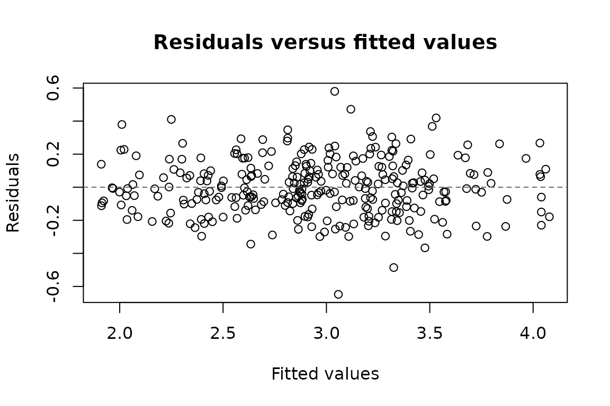

This vignette covers the basic workflow of panglm: how
panel data are laid out, the four classical estimators (pooled, fixed
effects, between, random effects) and the correlated random effects
compromise, how to choose between them, which standard errors to report,
and how to get average partial effects, predictions, tables and plots.
The other vignettes build on it:
-
vignette("panglm-outcomes"): counts, costs, bounded and censored outcomes; -
vignette("panglm-endogeneity"): instrumental variables, Hausman-Taylor, dynamic GMM and sample selection; -
vignette("panglm-policy"): difference-in-differences, event studies and staggered adoption; -
vignette("panglm-heterogeneity"): random slopes, latent classes and quantile regression; -
vignette("panglm-methods"): the technical reference.
Which estimator to start from:
| Question | Estimator | model = |
|---|---|---|
| Effect of a change within a patient, robust to stable confounders | fixed effects | "within" |
| Effect of time-invariant traits (sex, treatment arm) | random effects | "random" |
| Within effects and time-invariant traits in one model | correlated random effects |
"random", cre = TRUE
|
| Differences between patients only | between | "between" |
| Descriptive population average, no panel structure | pooled, cluster SE | "pooling" |
Data layout
panglm works with data in long format: one row per
individual and period. The index argument names the
individual and the time columns. Panels may be unbalanced; missing or
duplicated index pairs are errors. The package ships a small synthetic
panel of 60 patients with chronic obstructive pulmonary disease (COPD)
seen at 5 visits.
library(panglm)
data(copd)
head(copd)
#> id visit treatment age smoker bmi crp fev1 exacerbations hospitalized
#> 1 1 1 1 70 0 28.5 5.9 2.61 2 0
#> 2 1 2 1 70 0 28.5 0.1 3.19 3 0
#> 3 1 3 1 70 0 28.5 4.1 2.88 5 1
#> 4 1 4 1 70 0 28.5 5.1 3.12 1 0
#> 5 1 5 1 70 0 28.5 3.3 2.91 3 0
#> 6 2 1 1 64 0 24.0 4.2 2.81 0 0treatment, age, smoker and
bmi are fixed at baseline; C-reactive protein
(crp) changes from visit to visit. The outcomes are lung
function (fev1, litres), the number of exacerbations and a
hospital admission indicator.
The four estimators
Write the model as , where is the unobserved, stable part of a patient’s health.
Pooled least squares ignores . It is consistent only if is unrelated to the regressors, and its classical standard errors are wrong because the errors of one patient are correlated, so always cluster by individual.
fit_pool <- panglm(fev1 ~ treatment + age + smoker + crp, data = copd,
index = c("id", "visit"), model = "pooling",
vcov = "cluster")
summary(fit_pool)
#>
#> Call:
#> panglm(formula = fev1 ~ treatment + age + smoker + crp, data = copd,
#> index = c("id", "visit"), model = "pooling", vcov = "cluster")
#>
#> Family: gaussian Link: identity Model: pooling Effect: individual
#> N = 300 groups = 60 vcov: cluster
#>
#> Coefficients:
#> Estimate Std. Error z value Pr(>|z|)
#> (Intercept) 4.091479 0.454502 9.002 < 2e-16 ***
#> treatment 0.208556 0.112802 1.849 0.06448 .
#> age -0.014239 0.006661 -2.138 0.03254 *
#> smoker -0.355207 0.116640 -3.045 0.00232 **
#> crp -0.032895 0.013675 -2.405 0.01615 *
#> ---
#> Signif. codes: 0 '***' 0.001 '**' 0.01 '*' 0.05 '.' 0.1 ' ' 1
#>
#> Log-likelihood: -189.6
#> Dispersion parameter: 0.2107
#> Residual df: 295 Iterations: 2Fixed effects (the within estimator) removes by subtracting each patient’s mean. It uses only changes within a patient, so it is robust to any stable confounder, but time-invariant regressors are not identified and are dropped.
fit_fe <- panglm(fev1 ~ crp, data = copd, index = c("id", "visit"),
model = "within", vcov = "cluster")
summary(fit_fe)
#>
#> Call:
#> panglm(formula = fev1 ~ crp, data = copd, index = c("id", "visit"),
#> model = "within", vcov = "cluster")
#>
#> Family: gaussian Link: identity Model: within Effect: individual
#> N = 300 groups = 60 vcov: cluster
#>
#> Coefficients:
#> Estimate Std. Error z value Pr(>|z|)
#> crp -0.035305 0.006072 -5.815 6.08e-09 ***
#> ---
#> Signif. codes: 0 '***' 0.001 '**' 0.01 '*' 0.05 '.' 0.1 ' ' 1
#>
#> Log-likelihood: 107.6
#> Dispersion parameter: 0.03588
#> Residual df: 239 Iterations: 2A rise of 1 mg/L in CRP within a patient goes with a fall of about 35
mL in FEV1. effect = "twoways" adds visit effects, which
absorb shocks common to all patients at a visit.
Between is least squares on the patient means, one row per patient. It uses only the differences between patients and is mostly useful as a contrast with the within estimator.
fit_be <- panglm(fev1 ~ crp + age, data = copd, index = c("id", "visit"),
model = "between")
coef(fit_be)
#> (Intercept) crp age
#> 4.48547472 -0.05542943 -0.01932395Random effects treats as a random draw, independent of the regressors (Swamy-Arora feasible GLS for the Gaussian model). It keeps the time-invariant regressors and is efficient when that independence holds.
fit_re <- panglm(fev1 ~ treatment + age + smoker + crp, data = copd,
index = c("id", "visit"), model = "random")
coef(fit_re)
#> (Intercept) treatment age smoker crp
#> 4.10943890 0.20549733 -0.01430869 -0.35583462 -0.03519775Correlated random effects (Mundlak 1978; Chamberlain
1980) lets
depend on the patient means of the time-varying regressors,
.
With cre = TRUE these means enter as
mean_<variable>. The slope of crp is
then the within slope, while treatment, age
and smoker stay in the model.
fit_cre <- panglm(fev1 ~ treatment + age + smoker + crp, data = copd,
index = c("id", "visit"), model = "random", cre = TRUE,
vcov = "cluster")
summary(fit_cre)
#>
#> Call:
#> panglm(formula = fev1 ~ treatment + age + smoker + crp, data = copd,
#> index = c("id", "visit"), model = "random", vcov = "cluster",
#> cre = TRUE)
#>
#> Family: gaussian Link: identity Model: random Effect: individual
#> N = 300 groups = 60 vcov: cluster
#>
#> Coefficients:
#> Estimate Std. Error z value Pr(>|z|)
#> (Intercept) 4.004113 0.725081 5.522 3.35e-08 ***
#> treatment 0.223437 0.152615 1.464 0.14318
#> age -0.013902 0.007074 -1.965 0.04940 *
#> smoker -0.352154 0.116349 -3.027 0.00247 **
#> crp -0.035305 0.006072 -5.815 6.08e-09 ***
#> mean_crp 0.013612 0.067007 0.203 0.83902
#> ---
#> Signif. codes: 0 '***' 0.001 '**' 0.01 '*' 0.05 '.' 0.1 ' ' 1
#>
#> Log-likelihood: -22.56
#> Dispersion parameter: 0.0359
#> Mundlak test (individual means jointly zero): chi2(1) = 0.04127, p = 0.839
#> Residual df: 294 Iterations: 2Choosing between fixed and random effects
The Hausman (1978) test compares the fixed- and random-effects slopes. Under its null both are consistent and random effects is efficient. The classical version uses model-based covariances; the Mundlak form tests in the correlated random effects regression with a cluster-robust covariance, and stays valid under heteroskedasticity and serial correlation, so it is the one to report.
fit_re1 <- panglm(fev1 ~ crp, data = copd, index = c("id", "visit"),
model = "random")
panhausman(fit_fe, fit_re1)
#>
#> Hausman specification test (fixed vs. random effects)
#>
#> chisq = 0.08488 , df = 1 , p-value = 0.7708
#> alternative hypothesis: one model is inconsistent
panhausman(fit_fe, method = "mundlak", data = copd)
#>
#> Mundlak specification test (fixed vs. random effects), vcov: cluster
#>
#> F = 0.1647 , df = 1, 59 , p-value = 0.6864
#> alternative hypothesis: one model is inconsistentNeither test rejects: in these data CRP is unrelated to the stable part of lung function, and random effects is acceptable. When the test rejects, use fixed effects, or correlated random effects if time-invariant regressors matter.
Standard errors
Every fit stores one covariance, chosen with vcov, and
vcov() recomputes another one after fitting:
-
"classical": model based, valid only under the full model assumptions; -
"HC1": robust to heteroskedasticity (pooled and fixed effects); -
"cluster": robust to heteroskedasticity and to any correlation within an individual. This is the default choice for panel data (Cameron and Miller 2015). The cluster is the individual unlessclustergives a coarser grouping, such as the hospital.
Nonlinear models and average partial effects
The same interface fits binary, count and other nonlinear models
through family. Their coefficients are on the link scale.
partialeffects() reports average partial effects on the
outcome scale: the mean derivative for continuous regressors and the
mean discrete change for binary ones, with delta-method standard errors
from the stored covariance. For random-effects models the mean
integrates over the random intercept, which gives the average structural
function of Wooldridge (2005).
fit_hosp <- panglm(hospitalized ~ treatment + age + crp, data = copd,
index = c("id", "visit"), model = "random",
family = "probit", cre = TRUE, vcov = "cluster")
partialeffects(fit_hosp)
#>
#> Average partial effects
#> Delta-method standard errors, vcov: cluster
#>
#> term contrast estimate std.error statistic p.value conf.low conf.high
#> treatment 1 - 0 -0.13560 0.069090 -1.963 0.0496700 -0.271000 -0.000194
#> age dY/dX 0.01161 0.003145 3.691 0.0002238 0.005442 0.017770
#> crp dY/dX 0.01713 0.013290 1.289 0.1974000 -0.008917 0.043180Active treatment lowers the probability of an admission between visits by about 14 percentage points, and each extra year of age raises it by about 1 point.
Predictions
predict() returns the linear predictor
(type = "link") or the mean
(type = "response"), in sample or for new data.
Random-effects predictions are population averages. Fixed-effects
predictions add the estimated individual effect, so newdata
needs the index columns; an unseen individual is an error unless
allow.new.levels = TRUE, which sets its effect to zero.
new <- data.frame(id = 1, visit = 6, treatment = c(0, 1), age = 65,
smoker = 0, crp = 3)
predict(fit_re, newdata = new, type = "response")
#> [1] 3.073780 3.279278
predict(fit_fe, newdata = data.frame(id = 1:2, visit = 6, crp = 3))
#> [1] 2.966713 2.905419Tables
tidy() and glance() methods (from the
generics package) exist for every model class, so the fits
work with broom and modelsummary.
generics::tidy(fit_fe, conf.int = TRUE)
#> term estimate std.error statistic p.value conf.low conf.high
#> 1 crp -0.03530482 0.006071829 -5.814528 6.080537e-09 -0.04720538 -0.02340425
generics::glance(fit_fe)
#> model effect family link vcov.type logLik AIC BIC
#> 1 within individual gaussian identity cluster 107.5641 -91.12812 138.5064
#> df.logLik df.residual r.squared adj.r.squared nobs n.groups theta
#> 1 62 239 0.8954046 0.8691464 300 60 NA
modelsummary::modelsummary(
list(Pooled = fit_pool, "Fixed effects" = fit_fe, "Random effects" = fit_re),
gof_map = c("nobs", "n.groups"), output = "markdown"
)| Pooled | Fixed effects | Random effects | |
|---|---|---|---|
| (Intercept) | 4.091 | 4.109 | |
| (0.455) | (0.434) | ||
| treatment | 0.209 | 0.205 | |
| (0.113) | (0.116) | ||
| age | -0.014 | -0.014 | |
| (0.007) | (0.007) | ||
| smoker | -0.355 | -0.356 | |
| (0.117) | (0.120) | ||
| crp | -0.033 | -0.035 | -0.035 |
| (0.014) | (0.006) | (0.006) | |
| Num.Obs. | 300 | 300 | 300 |
| n.groups | 60 | 60 | 60 |
Plots
plot() draws the coefficients with confidence intervals,
the residuals against fitted values, or observed against fitted
values.
plot(fit_cre, which = "coefficients")
plot(fit_fe, which = "residuals")
Validated against
The pooled, within, between and random-effects Gaussian estimators
reproduce plm::plm(); cluster and HC1 covariances reproduce
plm::vcovHC() and sandwich; pooled GLMs
reproduce stats::glm(); random-intercept GLMs reproduce
lme4 and glmmTMB; average partial effects
reproduce marginaleffects. The scripts are in the package
source (tests/testthat and validation/).
References
Cameron, A. C., and Miller, D. L. (2015). A practitioner’s guide to cluster-robust inference. Journal of Human Resources, 50, 317-372.
Chamberlain, G. (1980). Analysis of covariance with qualitative data. Review of Economic Studies, 47, 225-238.
Croissant, Y., and Millo, G. (2008). Panel data econometrics in R: the plm package. Journal of Statistical Software, 27(2), 1-43.
Hausman, J. A. (1978). Specification tests in econometrics. Econometrica, 46, 1251-1271.
Mundlak, Y. (1978). On the pooling of time series and cross section data. Econometrica, 46, 69-85.
Swamy, P. A. V. B., and Arora, S. S. (1972). The exact finite sample properties of the estimators of coefficients in the error components regression models. Econometrica, 40, 261-275.
Wooldridge, J. M. (2005). Unobserved heterogeneity and estimation of average partial effects. In D. W. K. Andrews and J. H. Stock (Eds.), Identification and Inference for Econometric Models, 27-55. Cambridge University Press.
Wooldridge, J. M. (2010). Econometric Analysis of Cross Section and Panel Data, 2nd edition. MIT Press.